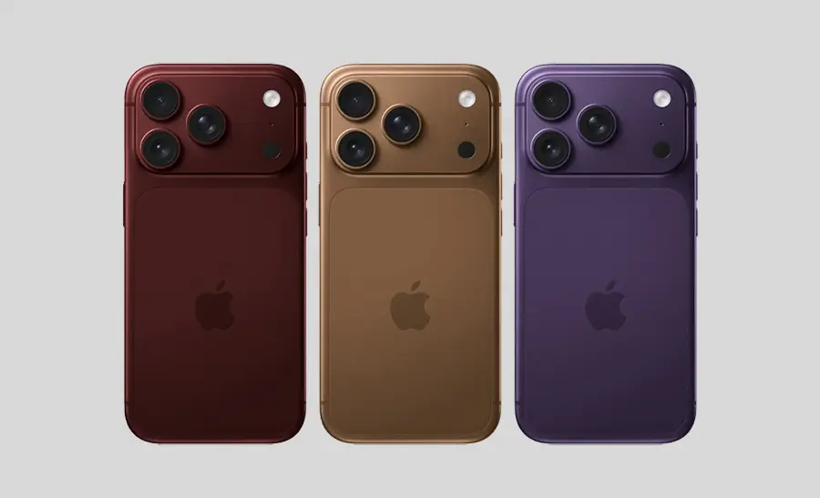

iPhone 18 Pro dan Pro Max: semua perubahan utama

Apple dikatakan memfokuskan model Pro sahaja untuk generasi baharu ini. Berikut perkara yang patut diperhatikan sebelum membandingkan harga atau merancang naik taraf.
Skrin dan prestasi
iPhone 18 Pro menggunakan skrin 6.3 inci manakala Pro Max menggunakan skrin 6.9 inci. Kedua-duanya menggunakan cip A20 Pro yang sama, jadi pilihan utama biasanya saiz, bateri dan cara anda menggunakan kamera.
Kamera sebagai fokus
Sistem tiga kamera 48MP serta apertur boleh ubah pada kamera utama menjadi fokus. Bagi pembeli biasa, lebih penting untuk melihat contoh foto dan video dunia sebenar daripada sekadar angka megapiksel.
Buat perbandingan yang jujur
Bandingkan telefon lama dengan keperluan semasa: berapa banyak storan digunakan, sama ada bateri masih tahan, dan sama ada kamera atau prestasi benar-benar menghalang kerja harian.